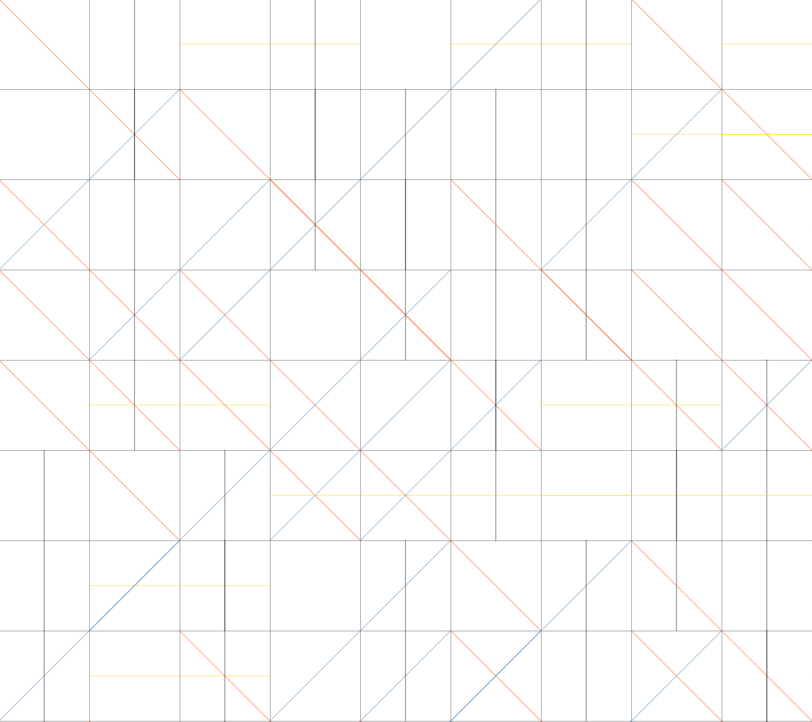

Wall Drawing #33 - Sol LeWitt, 1970
This is a program to create an art piece, Wall Drawing #33. It is based on the instructions by Sol LeWitt for recreating this piece.
Check out the code here.
Instructions
A one-inch (2.5 cm) grid covering a square.
Within each of the one-inch (2.5 cm) squares:
1: Vertical black lines;
2: Horizontal yellow lines;
3: Diagonal right red lines;
or 4: Diagonal left blue lines.
As many lines as desired, but at least one line in each square.
Every time the program runs, a random version of Wall Drawing #33 is automatically created.
Creating this was part of taking interactive and instructional art to the logical next level, and create a digital version.
